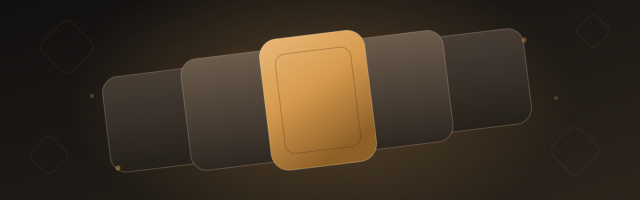

About
Ten years in games. I'm now DevOps Engineer at Ironbelly Studios on Godforge, a live free-to-play title, after joining the project as Senior Unity Engineer. I work on both sides of the release: the Unity code players run, and the infrastructure that turns a changelist into a build in their hands.
Godforge's Jenkins ran on bare-metal machines. I built a new build environment from scratch on AWS with Terraform (VPC and networking, an EC2 Jenkins controller, an EBS-persisted agent fleet with self-healing volume attach and detach) and migrated CI onto it. Separately, I moved the game's build and release pipelines from Azure to a Metaplay backend. Neither migration stopped releases. After that I made build cost visible, taking cost tracking from a one-shot script to a live panel in an internal ops dashboard I built on Node.js and AWS Lambda.
Alongside that: multi-platform Unity pipelines that ship Android, iOS, Windows and macOS from one codebase, a ground-up rewrite of our in-editor build tool in UI Toolkit, automated Perforce merge-conflict resolution, and change detection so we only build what a change actually affects. A build with no cache can take multiple hours and a full cached build still takes over an hour, so skipping the Addressables build or the client build when nothing touched them gives real time back. Roughly fifty developers and QA use these tools every day.
Before Godforge I shipped C++ gameplay systems on Fractured Veil, a multiplayer RPG on Steam, led an engineering team across concurrent Unity projects, and built realtime multiplayer for a VR/AR language-learning app on Mirror and AWS GameLift.
Shipped
-
 Godforge Live free-to-play title. Unity and C#, plus ownership of build, release and cloud infrastructure. Play it at godforge.gg 2024 to present
Godforge Live free-to-play title. Unity and C#, plus ownership of build, release and cloud infrastructure. Play it at godforge.gg 2024 to present -
 Fractured Veil Multiplayer RPG on Steam. Gameplay systems, audio and UI in C++ and Unreal Engine. View on Steam 2023 to 2024
Fractured Veil Multiplayer RPG on Steam. Gameplay systems, audio and UI in C++ and Unreal Engine. View on Steam 2023 to 2024 -
Realvi VR/AR language-learning app. Realtime multiplayer in Unity on Mirror networking and AWS GameLift. 2019 to 2021
-

Earlier titles Multi-platform releases in PlayCanvas WebGL and Unity across full project lifecycles, and an Unreal Engine indie title. 2016 to 2019
Selected work
Infrastructure
A build platform for a live F2P game
New AWS and Terraform build infrastructure, two migrations that never stopped releases, then cost-per-build tracking on top.
Read the case study
Godforge
Tooling
Rewriting the build tool engineers actually use
A UI Toolkit rewrite. Presets that hold parity to the CI pipeline, a two-step flow that catches configuration errors before a build starts, and a local backend and Addressables server so a developer can build and test on their own machine.
Read the case study
Godforge
DevOps
One place for everything DevOps
An internal dashboard on Node.js and AWS Lambda: check out a build, see versions, environments and backend state, compare performance across devices, and ask the DevOps team for something without sending a chat message.
Read the case study
Godforge
Gameplay
Gameplay systems across engines
Crafting, inventory, quests and weather in Unreal and C++. Realtime multiplayer in Unity on Mirror and GameLift. Ten years of shipping games.
Read the case study
Fractured Veil
Skills
- Languages
- C#, C++, Python, Groovy, JavaScript / Node.js, PowerShell, Shell
- Engines & game tech
- Unity (UI Toolkit, Addressables, editor tooling), Unreal Engine, PlayCanvas (WebGL), Mirror networking, AWS GameLift, AR/VR
- CI/CD & infrastructure
- Jenkins pipelines, Terraform, AWS (EC2, EBS, S3, Lambda, IAM, VPC, Cost Explorer), Azure, Docker, build automation, release engineering, multi-platform build pipelines, infrastructure migration, cost observability
- Tools & platforms
- Perforce / Helix, Git, Metaplay, PlayFab, Jira, Confluence, Discord APIs, Markdown-to-Confluence docs automation